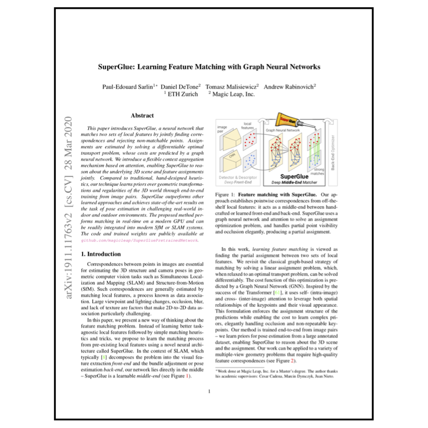
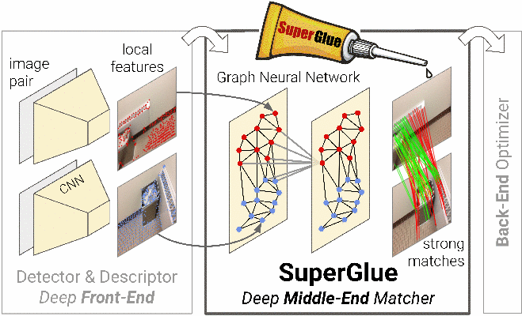

|
 PAPER |

CODE |
Abstract
We introduce SuperGlue, a neural network that matches two sets of local features by jointly finding correspondences and rejecting non-matchable points. Assignments are estimated by solving a differentiable optimal transport problem, whose costs are predicted by a graph neural network. We introduce a flexible context aggregation mechanism based on attention, enabling SuperGlue to reason about the underlying 3D scene and feature assignments jointly. Compared to traditional, hand-designed heuristics, our technique learns priors over geometric transformations and regularities of the 3D world through end-to-end training from image pairs. SuperGlue outperforms other learned approaches and achieves state-of-the-art results on the task of pose estimation in challenging real-world indoor and outdoor environments. The proposed method performs matching in real-time on a modern GPU and can be readily integrated into modern SfM or SLAM systems.

SuperGlue is a learnable feature matcher:
it acts as a middle-end between hand-crafted or learned front-end and back-end.
Tracking on TUM-RGBD
Tracking on ScanNet
Relative pose estimation on ScanNet
Relative pose estimation on ScanNet
Relative pose estimation on ScanNet
Relative pose estimation on ScanNet
Tracking: we show matches between each new frame and the last keyframe. A new keyframe is selected when essential matrix estimation fails or has too few inliers. Matches are represented as keypoints colored by their track ID.
Relative pose estimation: we show matches between each frame and a reference frame. Matches are colored in green if they are correct according to the ground truth epipolar geometry, in red otherwise. We show the translation and rotation error of the pose, computed via essential matrix estimation.
BibTeX Citation
@inproceedings{sarlin20superglue,
title = {{SuperGlue}: Learning Feature Matching with Graph Neural Networks},
author = {Paul-Edouard Sarlin and
Daniel DeTone and
Tomasz Malisiewicz and
Andrew Rabinovich},
booktitle = {CVPR},
year = {2020},
}